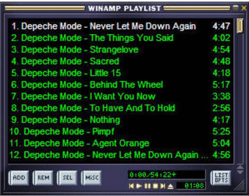

https://raw.githubusercontent.com/dem9967/oldsoft/main/index2/winamp.ico
Winamp

Это самый легендарный аудио-проигрыватель благодаря ему, люди могли слушать музыку в оцифрованном виде абсолютно стабильно. Хоть и винамп перестал развиваться, но зато он до сих пор актуален.
Скачать winamp 2.95
Скачать Русификатор
← Назад